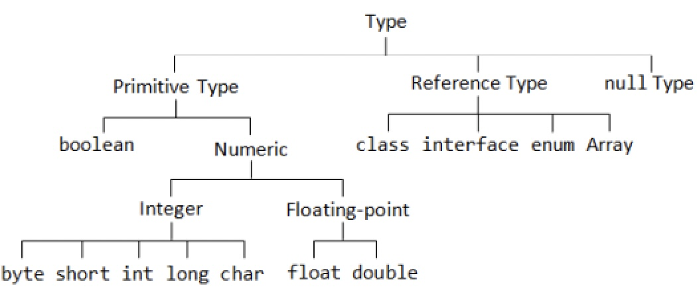

Java : 객체 지향 프로그래밍 언어
Compile & Run
소스코드파일(.java)은 컴파일러(javac.exe)를 통해 컴파일되어
바이트코드파일(.class)이 생성되고 JVM(java.exe)을 통해 각 운영체제에서 실행된다.
터미널에서 컴파일하기
- javac 소스코드.java
javac -cp ".:경로" 소스코드.java
- java class파일이름
Data
Data Type
| 정수 |
Byte |
범위 |
| byte |
1 |
-2⁷ ~ (2⁷-1) (-128 ~ 127) |
| char(문자) |
2 |
0 ~ (2¹⁶-1) (0 ~ 65,535) 유니코드 \u0000 ~ \uFFFF **unsgined |
| short |
2 |
-2¹⁵ ~ (2¹⁵-1) (-32,768 ~ 32,767) |
| int |
4 |
-2³¹ ~ (2³¹-1) (-2,147,483,648 ~ 2,147,483,647) |
| long |
8 |
-2⁶³ ~ (2⁶³-1) (-9,223,372,036,854,775,808 ~ 9,223,372,036,854,775,807) |
| 실수 |
Byte |
범위 |
| float |
4 |
0x0.000002P-126f ~ 0x1.FFFFFeP+127f |
| double |
8 |
0x0.0000000000001P-1022 ~ 0x1.FFFFFFFFFFFFfP+1023 |
| 논리 |
Byte |
범위 |
| boolean |
1 |
true / false |
- 정수 : 최상위비트 1bit가 부호정보를 저장하기 때문에 자료형 byte크기에서 1bit를 뺀 수의 제곱으로 표현 범위를 구할 수 있다. 만약 최상위비트가 1이라면 음의 정수이고, 십진수로 나타내려면 나머지 bit를 보수로 역전시킨 뒤 1을 더한 값에 -를 붙이면 된다.
최대/최소값 : 타입명.MAX_VALUE;
- 실수 : 부동소수점 타입은 2진포맷가수를 사용하기 때문에 정확한 숫자가 아닌 근사값으로 표현된다 범위가 왜 저렇게 나오지??
- 문자 : char는 java에서 unsgined로 동작 하므로 부호없이 2byte 모두 uni code로 쓰인다.
- 논리 : boolean은 1byte로 true,false를 저장한다
etc
- "H" →1글자지만 String
- "6"+"6"
- Integer.toBinaryString
Variable
변수란 하나의 값을 저장할 수 있는 메모리 공간이다
변수는 선언된 { } 블록내에서만 사용 가능하다
변수 명명 규칙
- 첫 번재 글자는 문자이거나, '$' '_' 이어야 하고 숫자로 시작할 수 없다(필수)
- 영어 대소문자가 구분된다(필수)
- 첫 문자는 영어 소문자로 시작하되, 다른 단어가 붙을 경우 첫 문자를 대문자로 한다(관례)
- 문자 길이의 제한은 없다
- 자바 예약어(int, public, new, true, if 등) 는 사용할 수 없다(필수)
Constant
상수는 선언과 동시에 초기화를 해야하며, 이후 변경이 불가하다.
Literal
리터럴은 값 그 자체이다.
정수 리터럴은 기본 int(4byte)이고, long 타입은 뒤에 l 또는 L을 추가
실수 리터럴은 기본 double(8yte)이고, float 타입은 뒤에 f 또는 F를 추가
문자 리터럴은 기본적으로 char(2byte)이고, 문자열 리터럴은 기본적으로 String
Promotion & Casting
형 변환이란 변수나 리터럴의 타입을 다른 타입으로 변환하는 것이다.
자동(묵시적) 타입 변환
- 작은타입 → 큰타입
- 리터럴은 변수 저장시 해당 변수타입 저장 범위를 넘지 않으면 자동 타입 변환된다.
강제(명시적) 타입 변환
- ( )큰타입 → 작은타입
- ( )로 명시하며, 데이터 손실이나 오버플로우가 발생 할 수 있다
etc
- System.out.println((int) ch1);
- System.out.println(변수.getClass());
Primitive & Reference

Primitive Type
- 원시자료형, 더이상 쪼개어지지않음
- 기본값이 있기 때문에 Null이 존재하지 않는다
- 실제 값을 저장하는 공간으로 스택(Stack) 메모리에 저장
Reference Type
- 원시자료형을 제외한 모든 타입은 참조자료형, 객체(Object)의 주소를 참조한다.
- 빈 객체를 의미하는 Null이 기본값이다
- 힙(Heap)영역에 생성된 객체의 주소값이 스택(Stack)영역에 참조자료형으로 저장된다. 즉 스택에는 참조값만 있고 실제값은 힙에 존재한다
== & equals()
- ==는 같은 데이터를 가리키는지 확인하는 연산자이고 (Primitive type에 사용)
- equals()는 담긴 데이터가 같은지 비교하는 메소드이다 (Reference type에 사용)
- java에서 문자열 리터럴이 동일하다면 동일한 Stirng을 참조한다(==가능)
하지만 new로 생성한 새로운 String은 다른 번지를 가지게된다(==불가능)
- call by value 값을 넘겨줘서 해당 값을 저장하여 작업
- call by reference 주소값을 전달하기 때문에 어느 위치에서든 같은 객체 (메소드로 리턴값으로 주고받지않아도 원본값이 수정됨)
Print & Scanner
Print
- System.out.println(); 출력 후 개행
- System.out.print(); 개행없이 출력
- System.out.printf(); 변수의 값을 지시자 형식으로 변환하여 출력
etc
- System.out.println("Hello \"World\"");
- System.out.println("Hello →줄바꿈 불가능
World");
- System.out.println("Hello "
+ "World");
- System.out.printf("&.3f", 변수)
Scanner
- sc.nextInt(); 정수 입력받기
- sc.nextLine(); Enter전까지 입력받은 문자열을 리턴
- sc.next(); Space전까지 입력받은 문자열을 리턴
- sc.next().charAt(0); 입력받은 문자열중 첫번째 문자만 저장
Operator
연산식은 연산자의 수가 아무리 많아도 반드시 하나의 값을 산출한다
대부분 연산자는 → 방향으로 연산되나, 단항연산자(++)와 대입연산자(+=)는 ← 방향으로 연산된다
연산 자동 타입 변환
피연산자 자료형 중 더 큰 자료형으로 일치시키거나 (값손실을 최소화)
피연산자 모두 int보다 작을 때(byte, char, short)는 int로 변환시킨다 (연산시 오버플로우 가능성이 높기 때문에)
단항 연산자
부호연산자 (+ -)
리터럴의 부호를 표기하거나, 변수의 부호를 연산한다. 부호연산시 타입이 작은경우 int , double로 자동 변환된다
증감 연산자 (++ --)
변수의 값을 1 증가 또는 감소할 때 사용하는 연산자. 변수의 앞(prefix)과 뒤(suffix)에 사용 (x++ 또는 --x), boolean 타입을 제외한 모든 기본 타입의 피연산자에 사용가능
증감 연산자가 단독으로 사용되는 경우 전위 후위 모두 동일한 결과이나, 다른 연산자와 함께 사용되는 경우 차이 발생 섞어쓰지말고 x++만 쓰자
전위 후위 연산 비교
- result = num++ + 5;
- result = ++num + 5;
- result = num++ + 5 + ++num;
논리 부정 연산자 (!)
true를 false로, false를 true로 변경. boolean 타입에만 사용가능
이항 연산자
대입연산자 (=)
오른쪽의 값을 왼쪽의 변수에 저장하는 연산자. 변수 = 값;
복합 대입 연산자 (+= -= *= %= &=)
오른쪽 피연산자(리터럴 및 변수)의 값을 좌측 피연산자인 변수에 저장한다
산술연산자 (+ - * / %)
boolean 타입을 제외한 모든 기본 타입에 사용
정수와 실수의 산술연산
- 5 / 2 = 2
- 5 / 2.0 = 2.5
- System.out.println(246 / 0);
- System.out.println(246 / 0.0); 왜?? 0.0은 뒤에 소수점땜에 완전한 0이 아닌가? ㅇㅇ
- System.out.println(246 % 0.0);
비교 연산자 (< > <= >= == !=)
대소 연산자는 boolean을 제외한 기본 타입에 사용할 수 있고, 동등 연산자는 모든 타입에 사용가능, 연산 결과로 true/false를 리턴
논리 연산자 (&& || ! ^)
boolean 타입의 변수를 사용하여 연산, 결과로 true/false를 리턴
SCE (Short-circuit evaluation : Lazy Evaluation)
- A && B 를 계산할 때 A가 false이면, B를 계산하지 않음
- A || B 를 계산할 때 A가 true이면, B를 계산하지 않음
Flow Control
프로그램의 실행 흐름을 원하는 방향으로 바꾸는 제어문. 제어문에는 조건문과 반복문이 있다.
Conditional statement
if
- if
- if - else
- if - else if - else
switch
if문은 경우의 수가 많을때 조건식을 계산 처리하는 시간이 많이 걸린다 switch문은 단 하나의 표현식으로 많은 경우의 수를 처리하기 용이하다
- switch (변수) {
case 값1 :
코드
break;
case 값2 :
코드
break;
default :
코드
break;
}
Loops and iteration
for
- 정해진 횟수 반복
- for (초기식; 조건식; 증감식) { 실행문 }
- 실행순서 1.초기식 2.조건식 3.실행문 4.증감식
- 초기식은 밖에 선언하여 생략하거나 쉽표로 두 개 이상 정의할 수도 있고, 증감식에는 다양한 식을 정의할 수 있다
while
- 조건이 true일때 계속 반복
- while (조건식) { 실행문 }
do - while
- 무조건 한 번 실행문을 실행한 후 반복문의 조건에 따라 반복 실행
- do { 실행문 } while (조건식);
break & continue
- break;가 포함된 가장 가까움 반복문 { }을 자체를 탈출하고 종료
- continue;는 아래 명령을 실행하지 않고, 반복문의 조건식으로 돌아가 다음 반복문 절차를 수행
- while (true) 무한루프와 if를 함께 사용한다
for - each
- for-each문 (향상된 for문) : 배열에 있는 모든 테이터를 접근할 때 사용
- for (타입 변수이름 : 배열) { ... }
Array
배열은 '같은 타입'의 여러 변수를 하나의 묶음으로 저장할 때 사용
선언과 생성
- 타입[ ] 배열이름; 선언 : 배열을 다루기 위한 참조변수(배열이름)를 Stack 영역에 생성 (%s로 참조값 확인가능, default값은 null)
- 배열이름 = new 타입[길이]; 생성 : 값을 저장할 실제 저장공간을 Heap 영역에 생성
- 즉, 배열은 Heap영역의 값을 참조하는 Reference Type이다.
- 배열 생성시 길이 생략불가. 길이 메소드 array.length;
초기화
배열은 생성과 동시에 자동적으로 해당타입의 default값으로 초기화된다.
그러나 원하는 값으로 지정하여 초기화도 가능하다
선언 후 초기화
- 선언 : int[] array = new int[길이];
- 초기화 : array[index] = 값;
선언과 초기화 동시
- int[] array = { 값1, 값2, ...};
- int[] array = new int[] { 값1, 값2, ...}
- int[] array;
array = new int[] { 값1, 값2, 값3,,,};
2차원 배열
1차원 배열을 원소로 갖는 배열
길이
- array.length 행의 갯수
- array[index].length 지정 열의 갯수
Method
메소드는 특정 작업을 수행하는 일련의 문장들을 하나로 묶은 것
어떤 값을 입력(parameter)하면 이 값으로 작업을 수행해서 결과를 반환(return)
정의
- 수식어 리턴타입 메소드이름(매개변수1, 매개변수2 ..) {본문}
- : public(생략가능), private, static ..
- : 타입(int, class ..) / 없을땐 void
- : 메소드를 호출할 때 input 데이터 / 없을땐 생략
- : 메소드의 본체body. 수행해야할 기능을 작성
- 메소드는 클래스의 내부이며, 다른 메소드의 외부인 영역에서 정의해야 한다.
- 자바 컴파일시 모든 메소드를 자동으로 앞쪽에 선언하기 때문에 호출위치와 선언위치의 순서는 상관없다
호출
- 메소드를 정의하여도 호출하지 않으면 동작하지 않는다
- 메소드이름(argument); argument없을때 생략
Overloading
매개변수가 다르면, 메소드의 이름을 동일하게 정의 할 수 있다
- 매개변수의 개수가 다르거나
- 매개변수의 타입이 다른거나
- 매개변수의 순서가 다른경우
- ->호출할때 구분안되니깐